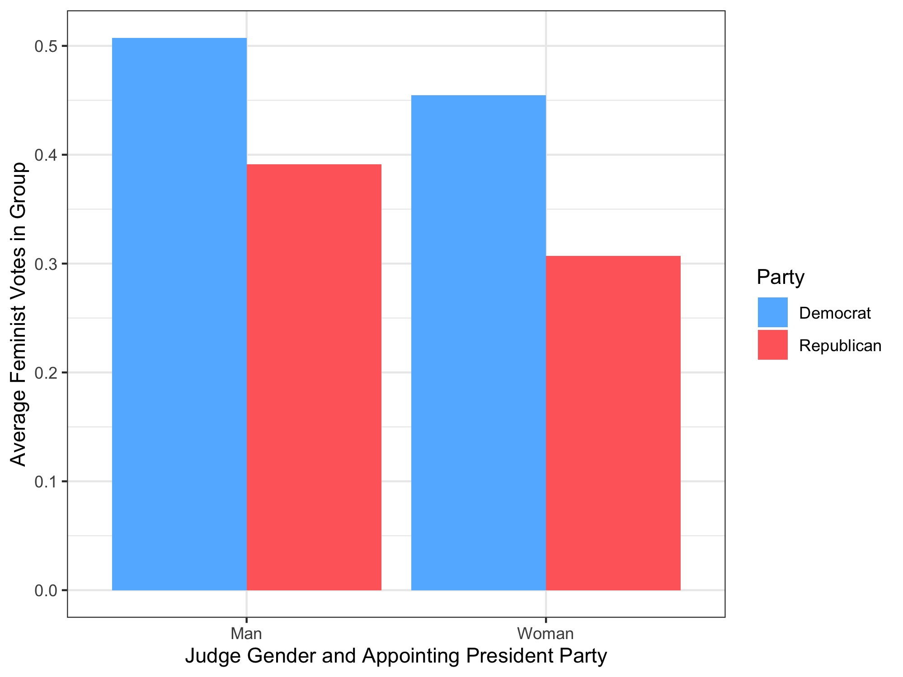

Problem Set 4: Sources of Empathy in the Circuit Courts
Background
In this problem set, we will analyze the relationship between the gender composition among a judge’s children and voting behavior among circuit court judges. In a recent paper, Adam N. Glynn and Maya Sen argue that having a female child causes circuit court judges to make more pro-feminist decisions. The paper can be found at:
Glynn, Adam N., and Maya Sen. (2015). “Identifying Judicial Empathy: Does Having Daughters Cause Judges to Rule for Women’s Issues?.” American Journal of Political Science Vol. 59, No. 1, pp. 37–54.
The dataset judges.csv contains the following variables about individual judges:
| Name | Description |
|---|---|
name |
The judge’s name |
num_kids |
The number of children each judge has. |
circuit |
Which federal circuit the judge serves in. |
girls |
The number of female children the judge has. |
progressive_vote |
The proportion of the judge’s votes on women’s issues which were decided in a pro-feminist direction. |
race |
The judge’s race (1 = white, 2 = African-American, 3 = Hispanic, 4 = Asian-American). |
religion |
The judge’s religion (1 = Unitarian, 2 = Episcopalian, 3 = Baptist, 4 = Catholic, 5 = Jewish, 7 = Presbyterian, 8 = Protestant, 9 = Congregationalist, 10 = Methodist, 11 = Church of Christ, 16 = Baha’i, 17 = Mormon, 21 = Anglican, 24 = Lutheran, 99 = unknown). |
republican |
Takes a value of 1 if the judge was appointed by a Republican president, 0 otherwise. Used as a proxy for the judge’s party. |
sons |
The number of male children the judge has. |
woman |
Takes a value of 1 if the judge is a woman, 0 otherwise. |
yearb |
The year the judge was born. |
Question 1 (10 points)
Load the tidyverse package in the setup chunk. In the first chunk for this question use read_csv to load the data/judges.csv file into a data frame called judges. In this exercise, you will create a cross-tab that shows the gender breakdown within each party. In particular, the result should be a table with 2 rows and 3 columns, where the rows represent each gender and the columns correspond to party. In the end, you should have a table that looks like this (with the correct proportion, not these made up ones):
| Gender | Democrat | Republican |
|---|---|---|
| Man | 0.5 | 0.6 |
| Woman | 0.5 | 0.4 |
Note that the columns here sum to 1. You can create this using the following data wrangling steps:
- Overwrite the
judgestibble with the same tibble with two newly created variables: one variable calledGendervariable to be labelled"Woman"and"Man"based on the variablewomanand another variable calledPartyto be labelled"Republican"and"Democrat"based on therepublicanvariable. - Use the
judgestibble to create the cross-tab and save it asgender_party_table. It should have 2 rows and 3 columns (“Gender”, “Republican”, and “Democrat”). Be very careful about the ordering of your grouping and remember thatsummarize()drops the last group by default when there is more than one group. You should usegroup_by(),summarize(),mutate(), andpivot_wider()to accomplish this. (Hint: if you are ending up with the wrong number of rows, make sure that the only variables in the tibble when you try to usepivot_widerare the two grouping variables and the proportion variable.) - Pass
gender_party_tabletoknitr::kable()to create a nicely formatted version of this table.
In your write-up, answer the following questions:
- How many judges are in this data set?
- What proportion of the judges are men? (hint: use
mean) - From your table, is the gender breakdown different for judges appointed by Democratic vs Republican presidents?
Rubric: 2pts for creating Gender and Party (autograder); 5pts for gender_party_table (autograder); 1pt for properly formatted table (PDF); 2pts for answering question (PDF).
Question 2 (7 points)
Use group_by and summarize to calculate the mean of progressive_vote in each combination of the Gender and Party variables you created in question 1 and save this tibble as gender_party_means (this tibble should have columns Gender, Party, and progressive_vote). Use this table to recreate the following barplot:

The autograder will check the aesthetic mappings, the correct placement of the bars, and the labels, but you do not need to match the exact colors (they are "steeblue1" and "indianred1" if you do want to match, though).
In the main text, briefly interpret the results of the analysis by describing which party and which gender tend to be more progress. Comment on whether there are larger differences across party or across gender in terms of progressive voting. Should we interpret any of these effects causally? Why or why not?
Rubric: 2pts for gender_party_means table (autograder); 3pts for gender_party_plot (autograder); 2pts for interpretation (PDF)
Question 3 (9 points)
What is the difference in the proportion of pro-feminist decisions between judges who have at least one daughter and those who do not have any? To compute this difference, first create a variable called any_girls that is "Any Girls" when the judge has at least 1 girl and "No Girls" otherwise and save this variable back to the judges tibble. Then, created a new tibble called parents that is filtered to contain judges that have at least one child. Create an object called vote_by_girls that has three columns: the unique values of the any_girls variable, the mean of the progressive_vote variable for each value of any_girls (column called progressive_mean), and the standard deviation of progressive_vote for each value of any_girls (column called progressive_sd). Present the table using knitr::kable().
In the main text, describe which group has a higher average progressive vote and which group’s distribution has more spread. Why might we worry about interpreting any difference in means causally, considering number of children as a possible confounder?
Rubric: 1pt for creating any_girls variable (autograder); 1pt for creating parents tibble (autograder); 4pts for creating the vote_by_girls table (autograder); 1pt for description of the table (PDF); 2pts for discussion of causality (PDF).
Question 4 (9 points)
Given that the number of children might be a confounder for the relationship between number of girls and voting, let’s estimate the average treatment effects of having girls using statistical control for the number of children among judges that have one to three children (that is, first filter to judges that only have between 1 and 3 children, inclusive). Your final table should be called ate_nkids and should be a tibble that has two columns: one with the number of children (1, 2, and 3) and the other with the estimated ATEs of any_girls for each of those levels. Print out this table using the knitr::kable() command.
Are these estimated effects largely similar or largely different than what you found using all of the data? What assumption do you need to make to interpret these effects causally? Do you think it is plausible in this case?
Rubric: 6pts for ate_nkids (autograder); 1pt for nicely formatted table (PDF); 2pts for discussion (PDF)
Question 5 (EXTRA CREDIT, 5 points)
This problem is optional. Any points earned on this problem can be applied to lost points on other parts of the problem set. You cannot earn more than the maximum score on the problem set. There will be no autograder for this question.
Let’s consider the design of this study. The original authors assume that, conditional on the number of children a judge has, the number of daughters is random (as we did in the previous question). If this is true, half of a judge’s children should be female, on average. A deviation from this proportion could indicate that a gender preference among judges due a stopping rule such as “have children until we get one girl,” which would violate the randomization assumption.
To check this assumption, group the data by the number of children and calculate the proportion of children in each group that are girls. Create a barplot that these proportions on the y-axis with the number of children on the x-axis. This barplot should have (a) informative labels on each axis, (b) a y-axis range that runs from 0 to 1, and (c) a horizontal line at 0.5 to compare against. Does it appear that there is strong gender preference/selection happening among judges?